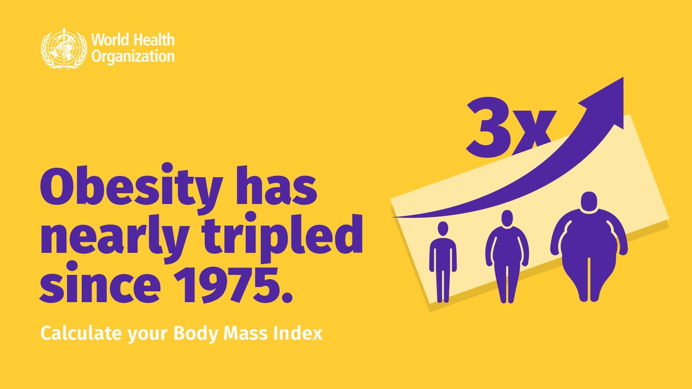

About the Issue
According to World Health Organization statistics from 2014, the United States ranks 12th among English-speaking countries as a mother tongue in terms of obesity.
Obesity has risen dramatically in the United States in recent decades, becoming a major public health concern. Similarly, many industrialized countries have seen increases.
What is the issue about?
Obesity is a common health problem that has a variety of negative consequences for millions of people in the United States. Diseases are only one of the negative consequences of obesity; type II diabetes, cardiovascular disease, and hypertension are just a few of the diseases that are strongly linked to obesity (Boualaoui, 2015). Obese people have been linked to an increased risk of certain cancers, arthritis, and Alzheimer's disease. Each of these health problems can cause people to have a very low quality of life.
Who are the people affected?
Each year, over 300,000 adults in the United States die as a result of obesity-related causes (Menifield, Doty, Fletcher, 2008). Obesity affects nearly 38 percent of adults and 17 percent of adolescents in the United States (Fox, 2016). Obesity in children is more complicated than obesity in adults because an adult can stick to a specific diet or exercise program, whereas a young child cannot easily commit to what an adult does. Obesity in children is a common health problem that is exacerbated by fast food restaurants that serve high-calorie, high-fat meals.
Where is this even happening?
Obesity has clearly become a growing problem in the United States, and Fox (2016) calls it an epidemic. A number of social, economic, environmental, and genetic factors are thought to play a role in the rise in the percentage of obese people in the United States.
Why is this even happening?
Obesity is caused by an excess of calories consumed or a lack of energy expenditure (Youssef, 2004). However, a less literal approach to the cause of obesity may be helpful in successfully lowering or maintaining the obesity rate. Income is one of the main factors linked to obesity. Obesity and poverty are inextricably linked. Poor housing conditions may exist for low-income families or individuals, such as overcrowding and a lack of outdoor exercise areas. Low-income households, in addition to having poor housing, have been found to consume fewer fruits, vegetables, and high-fiber foods, as well as more sugar, than high-income households. This could be because unhealthy options, such as fast food, are more convenient and cost-effective. Additional factors that may influence diet include disposable income and cultural preferences (Yousef, 2004).
The lack of public information may be a cultural disadvantage for some people. Certain people, for example, are unable to tell which products are high in fat and by how much. The media also plays a significant role in distorting people's perceptions of nutrition. Food companies' advertising sends messages to children that are intentionally deceptive, and it has the potential to change food preferences and purchasing habits. Subsidies for agricultural products help keep prices low, which has an impact on consumers (Youssef, 2004). Overall, large companies and corporations strive to generate the most revenue with the least amount of expenditure, and they invest a great deal of time and effort into effectively marketing and advertising their products.
Though the media and income are two very obvious and powerful influences on obesity, there are a few less obvious factors to consider, such as ethnicity. In the case of ethnic minorities, ethnicity has been linked to the prevalence of obesity. Due to cultural barriers in communication, ethnic minorities may receive insufficient social support. Ethnic minorities may find it more difficult to access and comprehend health promotion messages due to cultural barriers. Many minorities in the United States, unfortunately, are plagued by racism and suffer from high levels of stress, which can lead to stress eating and even depression (Youssef, 2004).